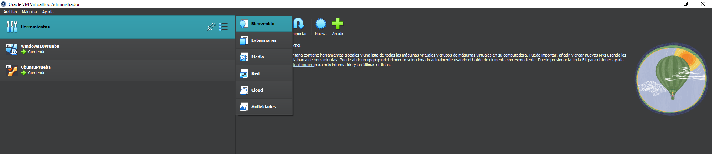
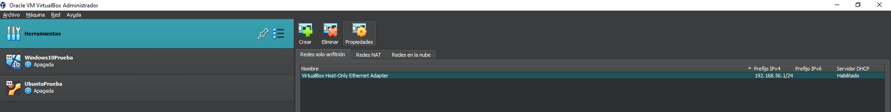

HOW TO Virtualizacion y uso de Samba
Paso 2: Configuración de la RedNAT e Instalacion de los sistema operativos
Antes de abrir las máquinas virtuales, vamos a selecionar en "Oracle VirtualBox" en la pestaña "Herramientas", dentro de la pestaña tendrá dos iconos, una "chincheta" y otro icono de "tres cuadros con 3 rayas" al hacer click en el segundo icono aparecerá nuevas opciones disponibles. entre ellas estan "Bienvenido", "Extensiones", "Medio", "Red", "Cloud" y "Actividades". Vamos a hacer click en "Red"
Despues la ventana cambiará con nuevas opciones donde habrá "Crear", "Eliminar" y "Propiedades", Debajo de los botones hay tres pestañas, "Red solo-anfitrión", "Red NAT" y "Redes en la nube"
Le damos click a la pestaña "Red NAT", donde no tiene que tener ninguna red o una predeterminada.
Si no hay ninguna red la creamos dando click al boton "Crear".
Una vez creada la Red Nat le damos un click sobre la maquina virtual que queramos usar y le daremos al boton "Configuración", se abrirá una ventana, dentro de ella habrá muchas subpestañas
Selecionamos la pestañas "Red" y en el apartado "Conectando a:" cambiamos la que haya predeterminada por "RedNAT", una vez terminada, se hará con la otra máquina restante.
Una vez configuradas las dos, empezará la instalación automatica de ambas máquinas.